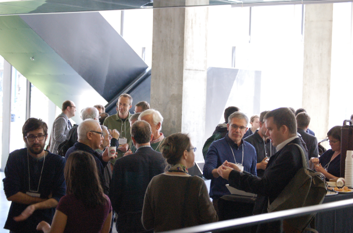
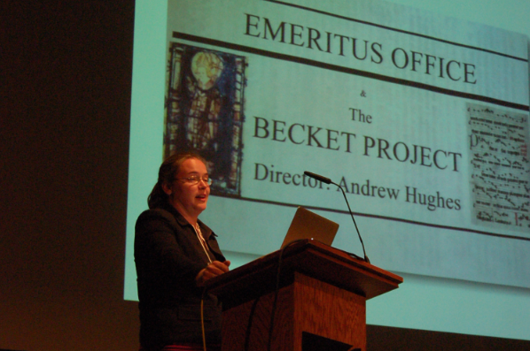
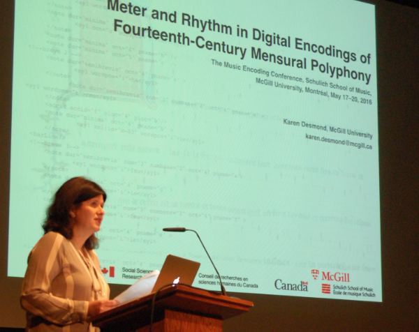
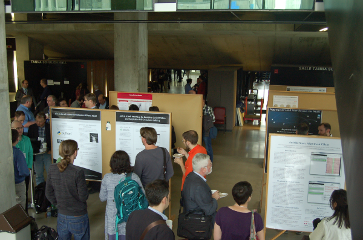
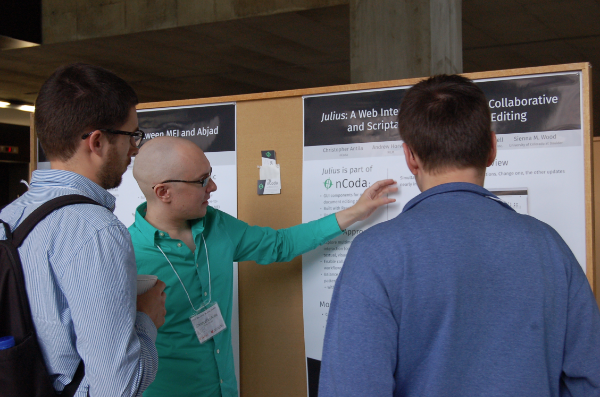
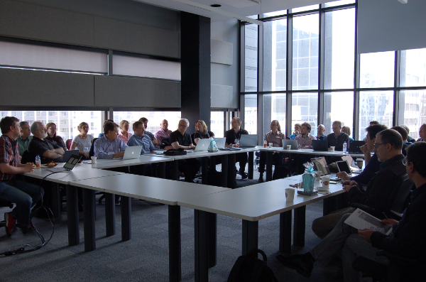
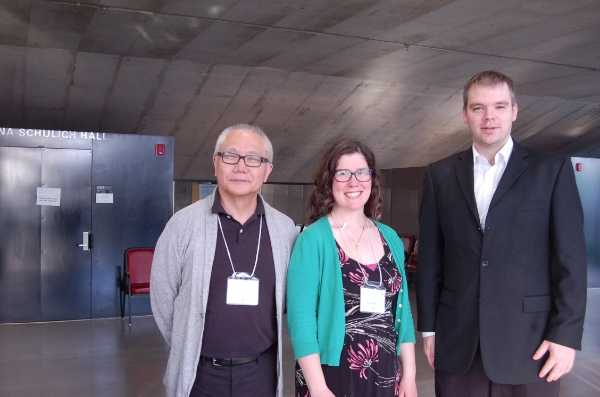

The Music Encoding Conference
Posted by ehopkins on June 23, 2016
One month ago, the SIMSSA Project and the Schulich School of Music had the privilege of hosting the fourth annual Music Encoding Conference, organized by the Music Encoding Initiative. This year’s conference included nearly 70 delegates from 10 different countries, including about a dozen students.
 Participants gathered between activities in the Wirth Music Building lobby.
The full conference program is available as a PDF here. The conference started with workshops on recent developments in Verovio with Laurent Pugin, an Introduction to MEI with Perry Roland, and “Encoding Music at Music Encoding” with Jim DeLaHunt.
We opened the first day of papers with a message from our Dean, followed by Julia Flanders’ keynote, The Provocation of Music: Evolving Paradigms for Markup. The conference featured 20 papers presented over two days. Below, Kate Helsen presents Hartker’s XML: The Optical Neume Recognition Project and MEI (paper with Jennifer Bain, Andrew Hankinson, Inga Behrendt, and Ichiro Fujinaga).

Here, Karen Desmond presents research on Meter and Rhythm in Digital Encodings of Fourtheenth-Century Mensural Polyphony.

We set up our poster session in the lobby of the Wirth Music Building, featuring eleven different projects (see our program PDF for the full listing of posters and presenters here).

On Thursday, poster authors had the chance to explain their projects, answer questions, and do live demos. Here, Christopher Antila explains his group’s project, Julius: A Web Interface for Realtime Collaborative and Scriptable MEI Document Editing (with Andrew Horwitz, Jeffrey Treviño, Simon Whitmell, and Sienna Wood).

The official conference closed with Richard Freedman’s keynote, Music, MEI and the Arts of Quotation, followed by a banquet at the Auberge Saint-Gabriel in Vieux-Montréal.
Friday was the “Unconference Day”, a time set aside for meetings, projects, and ideas arising during the conference. We started the day with the MEI Community Meeting, looking at upcoming changes and the year ahead.

After, an agenda was drafted for the rest of the day. Participants were quick to fill the time, and special interest groups, meetings, and hacking kept everyone busy!
That evening, Karen Desmond, Peter Schubert, and VivaVoce Montréal gave a free public lecture-recital in McGill’s Redpath hall: 2000 Years of Seeing Sounds: the Story of Music Notation. (Watch the show on YouTube here.) The concert led the audience through the history of different trends in the development of Western music notation and how composition and musical trends influence each other, all beautifully illustrated with sung examples by VivaVoce.
Thanks again to the Program and Organizing Committee members, reviewers, MEI Board Members, SSHRC and the Schulich School of Music, as well as all the participants who travelled to Montreal. It was a pleasure to host you!
 Organizing Committee Members Ichiro Fujinaga, Emily Hopkins, and Andrew Hankinson